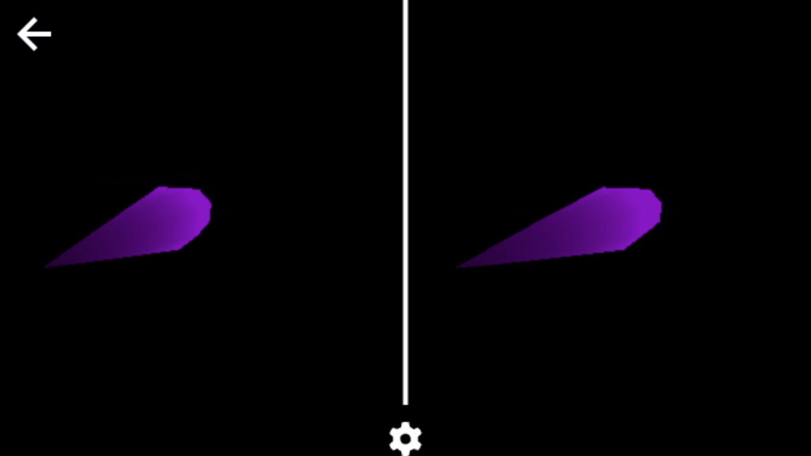

CSE 160 Programming Assignment 3: Transformation of Fancier Model
Author: Stryker Buffington - sbuffing@ucsc.edu
Submitted on: May 9, 2021
Program Overview:
This program implements wireframe, flat shading, and smooth shading, building upon program 2's 3D scene. It allows the user to Modify lighting settings, toggle light sources, and move a point light source around the scene.
Program Links:

User Guide
- Switch Rendering Modes by selecting Wireframe, Flat Shading, or Smooth Shading.
- Choose which types of lighting contibute to the shotgun's illumination by toggling the Diffuse Lighting, Ambient Lighting, and Specular Lighting check boxes
- Toggle on and off the Point Light and Directional Light with the corresponding check boxes.
- Move the point light source left and right by modifying the Point Light Position slider.
Implementation Notes
The program was based off of Lucas Nascimento Ferreira's base code. Smooth Shading was achieved using Gouraud Shading.